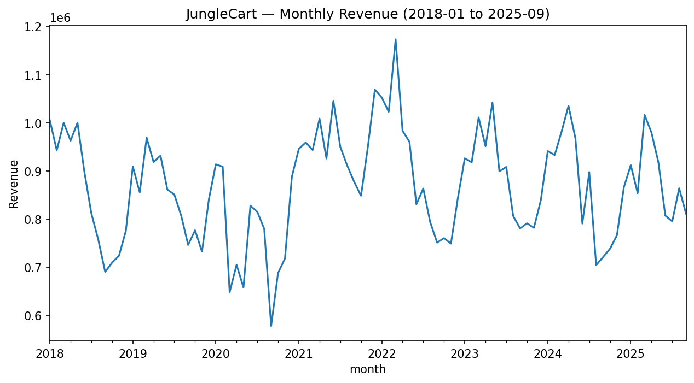
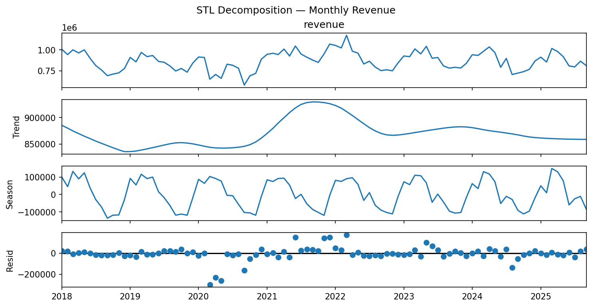
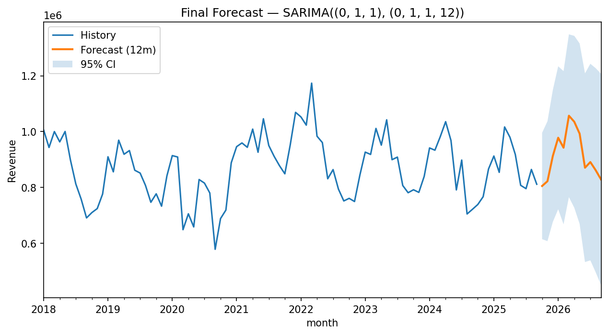

| model | MAE | RMSE | MAPE% | sMAPE% |
|---|---|---|---|---|
| SARIMA((0, 1, 1), (0, 1, 1, 12)) | 49,115.92 | 64,639.65 | 5.71 | 5.90 |
| SARIMAX((0, 1, 1), (0, 1, 1, 12))+exog | 49,121.85 | 64,651.86 | 5.71 | 5.90 |
| ETS(AAA) | 59,243.11 | 66,762.66 | 6.69 | 6.86 |
| MovingAvg(k=3) | 77,982.19 | 95,996.49 | 8.86 | 8.91 |
| Naive (last) | 115,865.53 | 135,468.28 | 12.60 | 13.72 |



artifacts/monthly_revenue.csvmodel_metrics.csvartifacts/model_selection.jsonforecast_6m.csv, forecast_12m.csvcategory_forecast_topN_6m.csv (if available)artifacts/environment_versions.jsonforecast_6m.csv to Repo 03 (sales & inventory planning).